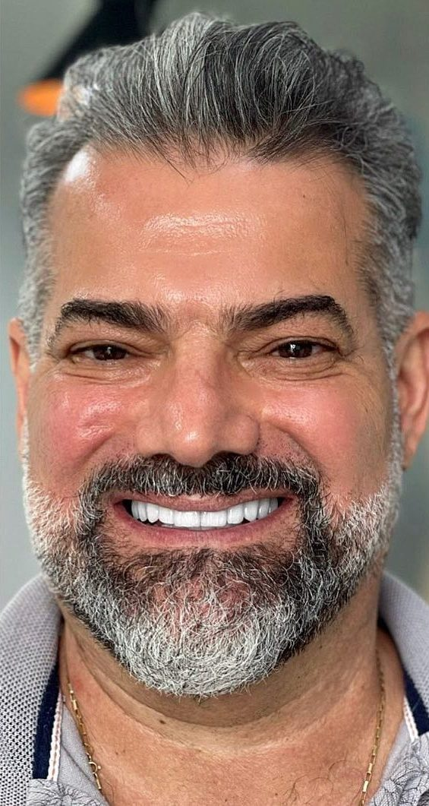
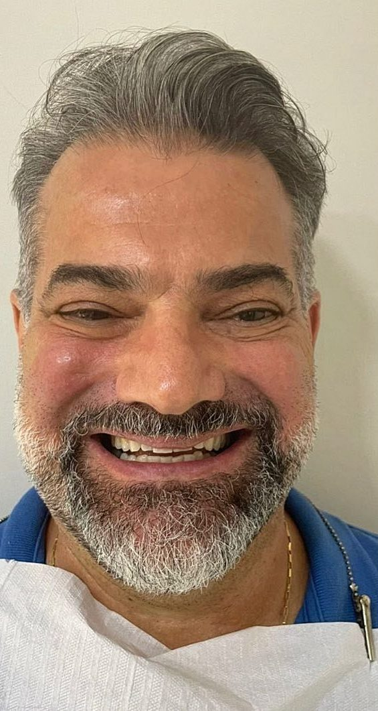
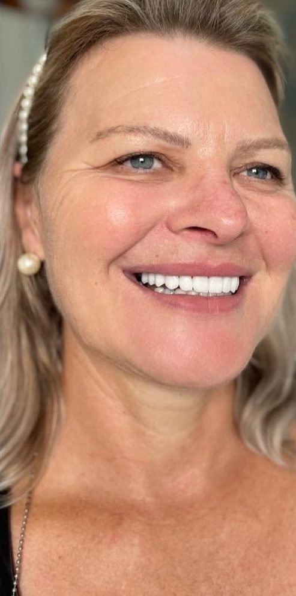
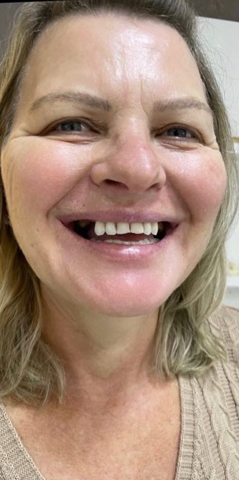
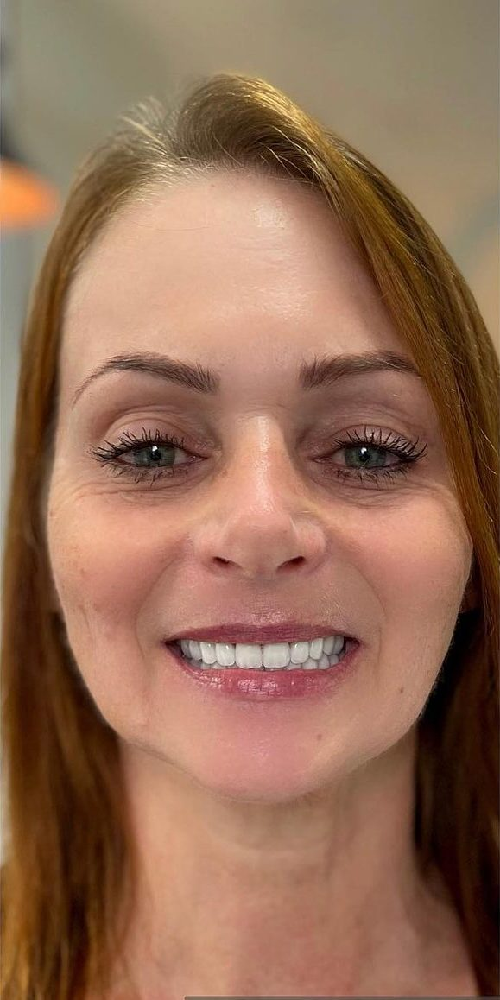
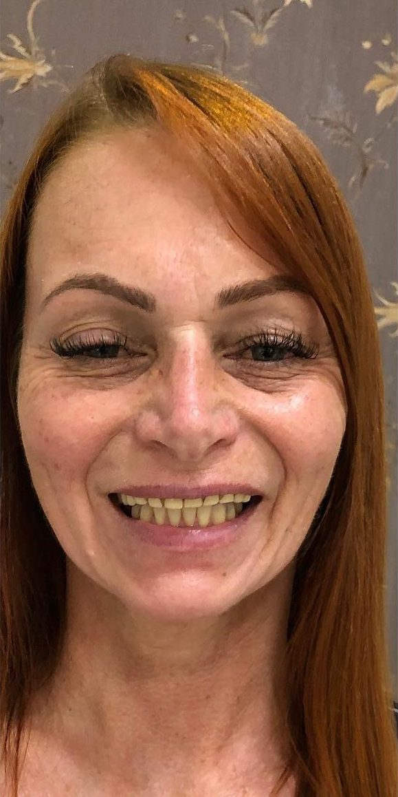
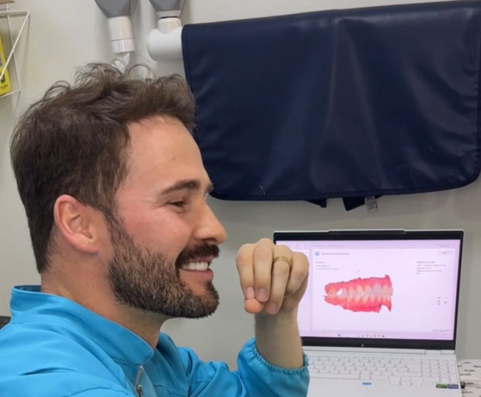
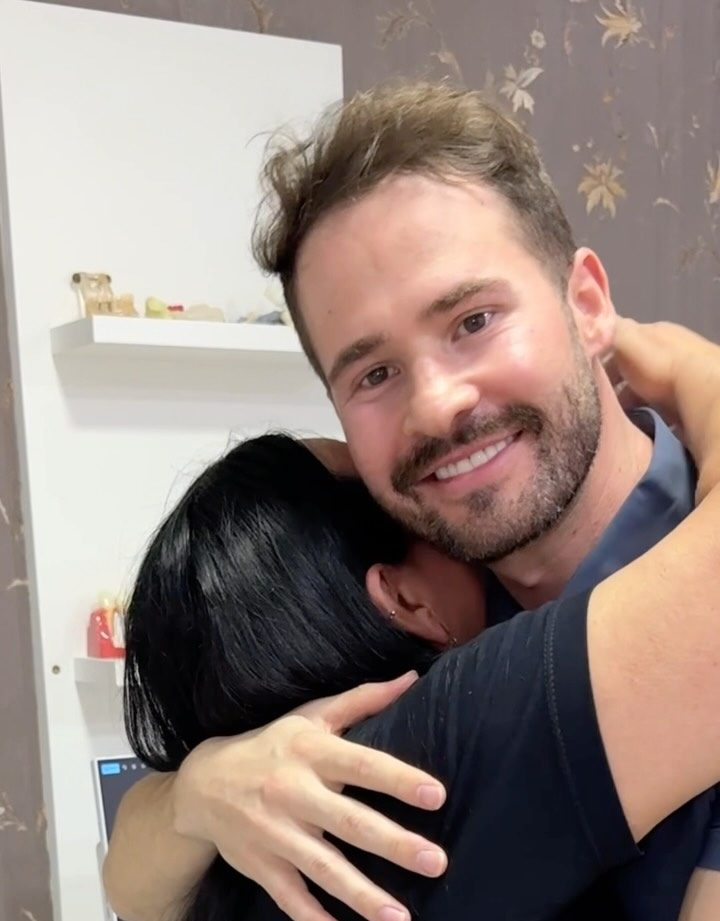

Implantes dentários
Para repor um ou mais dentes com firmeza, sem depender de prótese móvel.
Perguntar sobre implantesImplantes · Dentes fixos · Lentes de porcelana
Reabilitação oral em Blumenau com o Dr. Guilherme Pagnoncelli. Cada sorriso começa por uma conversa, passa por um planejamento digital e segue um plano feito para você.
Tratamentos
O trabalho do Dr. Guilherme é a reabilitação oral: devolver dentes, mastigação e sorriso. Cada plano junta só o que o seu caso pede.
Para repor um ou mais dentes com firmeza, sem depender de prótese móvel.
Perguntar sobre implantesPara quem usa dentadura ou perdeu os dentes de uma arcada e quer voltar a comer de tudo, com dentes fixos sobre implantes.
Perguntar sobre dentes fixosLentes de contato dental para mudar cor, formato e tamanho dos dentes, com acabamento natural.
Perguntar sobre lentesQuando dá para preservar o dente, a gente preserva: pinos, coroas em porcelana e reconstruções.
Perguntar sobre coroasPara deixar os dentes naturais mais claros, sozinho ou junto de outros tratamentos.
Perguntar sobre clareamentoMarque no Mapa do Sorriso o que incomoda. O Dr. Guilherme olha com você na avaliação.
Montar meu mapaExclusivo deste site
Mostre, dente por dente, o que incomoda. O Dr. Guilherme recebe tudo pelo WhatsApp e a sua avaliação já começa com o seu caso explicado.
Escolha o que marcar e toque nos dentes.
Dica: pegue um espelho. O mapa está do jeito que você se vê nele.
Casos reais
Arraste a linha para comparar o antes e o depois.






Casos publicados pelo Dr. Guilherme no Instagram. Cada tratamento é planejado para a pessoa, e o resultado depende da avaliação clínica. Ver mais casos no Instagram

Como funciona
Você conta o que incomoda e o Dr. Guilherme examina com calma. Quando precisa, pede exames de imagem, como a tomografia.
Com o modelo da sua boca na tela, o tratamento é planejado antes de começar, e você entende cada passo.
Implantes, provisórios, coroas e lentes entram na ordem certa. As reabilitações completas que ele mostra no Instagram levaram de 7 a 10 meses.
Depois do sorriso pronto vêm as revisões, para o resultado durar e para cuidar de qualquer detalhe cedo.

O dentista
Cirurgião-dentista · CRO-SC 12489
Atende em Blumenau, na Clínica de Odontologia Inove, na Itoupava Seca. O dia a dia dele é a reabilitação oral: devolver dentes, mastigação e sorriso para quem perdeu, com implantes, coroas e lentes de porcelana.
E quando dá para salvar o dente natural, ele salva. Nas palavras dele: “nem tudo está perdido, quando podemos preservar os dentes, a gente preserva”.
“Como é legal participar da vida das pessoas.”
Dr. Guilherme, no Instagram
Dúvidas
Não achou a sua? Mande no WhatsApp, a equipe responde.
Perguntar no WhatsAppEm muitos casos, sim, com dentes fixos sobre implantes, o chamado protocolo. Quem define é a avaliação, junto com exames como a tomografia, que mostram o osso disponível.
A idade, sozinha, não impede o tratamento. O que conta é a saúde geral e a avaliação da boca. Muitos dos casos que o Dr. Guilherme mostra no Instagram são de pacientes da melhor idade.
Depende do caso. As reabilitações com implantes e lentes que ele mostrou no Instagram levaram de 7 a 10 meses. Tratamentos menores são mais rápidos, e o prazo do seu plano sai do planejamento.
Depende de cada caso. A necessidade de preparo é definida na avaliação e no planejamento, sempre buscando preservar o dente natural.
O valor depende do que o seu caso pede e é apresentado depois da avaliação, com o planejamento em mãos. Pelo WhatsApp a equipe tira dúvidas e marca o horário.
Você marca no desenho os dentes que incomodam, responde três perguntas rápidas e envia o resumo pelo WhatsApp, com a imagem do mapa se quiser. Nada fica salvo no site, e a avaliação continua sendo feita no consultório.
Contato
Atendimento de segunda a sexta
| Segunda a quinta | 8h às 12h · 13h30 às 19h |
|---|---|
| Sexta | 8h às 12h · 13h30 às 18h30 |
| Sábado e domingo | Fechado |
O mais importante é dar o primeiro passo.